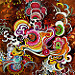
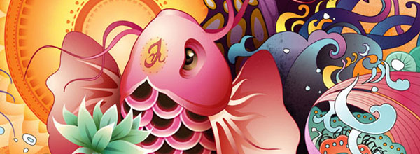

Flickr

Дизайн как вдохновение
May 31, 2017 in Category
Отвечая на изменчивые нужды современного общества, дизайнеры все чаще обращаются к историческим стилям в поисках вдохновения. Мотивы из прошлого возрождаются в искусстве, дизайне и архитектуре. Хотя подобные заимствования происходили, наверное, всегда – вспомните произведения древнеримских скульпторов, черпавших вдохновение в искусстве Древней Греции, - уже на протяжении 150 лет длятся дискуссии об их допустимости. В ХIХ веке исторические стили играли в искусстве ведущую роль, в ХХ – стиль модерн положи конец их господству. Модернисты стремились создать собственный художественный язык и полностью отрицали заимствования из прошлого. Лишь в 1960-х, с приходом постмодернизма, дизайнеры вновь стали обращаться к истории.